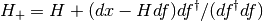

scipy.optimize.broyden2¶
- scipy.optimize.broyden2(F, xin, iter=None, alpha=None, reduction_method='restart', max_rank=None, verbose=False, maxiter=None, f_tol=None, f_rtol=None, x_tol=None, x_rtol=None, tol_norm=None, line_search='armijo', callback=None, **kw)[source]¶
Find a root of a function, using Broyden’s second Jacobian approximation.
This method is also known as “Broyden’s bad method”.
Parameters : F : function(x) -> f
Function whose root to find; should take and return an array-like object.
x0 : array_like
Initial guess for the solution
alpha : float, optional
Initial guess for the Jacobian is (-1/alpha).
reduction_method : str or tuple, optional
Method used in ensuring that the rank of the Broyden matrix stays low. Can either be a string giving the name of the method, or a tuple of the form (method, param1, param2, ...) that gives the name of the method and values for additional parameters.
Methods available:
- restart: drop all matrix columns. Has no extra parameters.
- simple: drop oldest matrix column. Has no extra parameters.
- svd: keep only the most significant SVD components. Takes an extra parameter, to_retain`, which determines the number of SVD components to retain when rank reduction is done. Default is ``max_rank - 2.
max_rank : int, optional
Maximum rank for the Broyden matrix. Default is infinity (ie., no rank reduction).
iter : int, optional
Number of iterations to make. If omitted (default), make as many as required to meet tolerances.
verbose : bool, optional
Print status to stdout on every iteration.
maxiter : int, optional
Maximum number of iterations to make. If more are needed to meet convergence, NoConvergence is raised.
f_tol : float, optional
Absolute tolerance (in max-norm) for the residual. If omitted, default is 6e-6.
f_rtol : float, optional
Relative tolerance for the residual. If omitted, not used.
x_tol : float, optional
Absolute minimum step size, as determined from the Jacobian approximation. If the step size is smaller than this, optimization is terminated as successful. If omitted, not used.
x_rtol : float, optional
Relative minimum step size. If omitted, not used.
tol_norm : function(vector) -> scalar, optional
Norm to use in convergence check. Default is the maximum norm.
line_search : {None, ‘armijo’ (default), ‘wolfe’}, optional
Which type of a line search to use to determine the step size in the direction given by the Jacobian approximation. Defaults to ‘armijo’.
callback : function, optional
Optional callback function. It is called on every iteration as callback(x, f) where x is the current solution and f the corresponding residual.
Returns : sol : ndarray
An array (of similar array type as x0) containing the final solution.
Raises : NoConvergence :
When a solution was not found.
Notes
This algorithm implements the inverse Jacobian Quasi-Newton update

corresponding to Broyden’s second method.
References
[vR] B.A. van der Rotten, PhD thesis, “A limited memory Broyden method to solve high-dimensional systems of nonlinear equations”. Mathematisch Instituut, Universiteit Leiden, The Netherlands (2003).